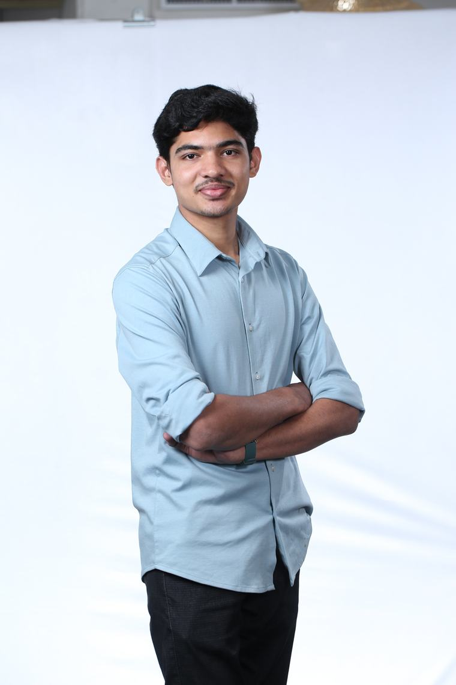

Google HoF
HoF
Listed in Google’s Security Hall of Fame.
recognitionverified
SR. SOFTWARE ENGINEER · DEVOPS
Senior Software Engineer (DevOps) at Moveworks.
Based in Bengaluru, India.
I build platforms that ship safely.

Senior Software Engineer (DevOps) at Moveworks, Bengaluru. Previously an SRE at ShopUp, keeping high-traffic commerce infrastructure fast and reliable under real load.
I work where DevOps engineering meets security: multi-cloud Kubernetes, GitOps, and policy-as-code, with automation that deletes toil. Every system is designed around its blast radius — failure should be small, contained, and recoverable.
Off the clock I hunt bugs — 100+ disclosed, a Google Hall of Fame listing, and rewards across leading programs — and ship open source, including a DevOps CTF.
apiVersion: devops.gokul.dev/v1
kind: Engineer
metadata:
name: gokul-ap
namespace: moveworks
labels:
role: senior-devops
focus: devops-security
spec:
specializes:
- kubernetes
- devops-engineering
- security
- automation
mission: "ship platforms safely"
status:
phase: Running
hallOfFame: true
vulnerabilitiesDisclosed: 100+
ready: trueA provisioned catalog of the platforms, runtimes and tooling I operate — browsed like a cloud console, grouped by kind.
Listed in Google’s Security Hall of Fame.
recognitionSecurity issues responsibly disclosed.
vulns · disclosedEarned across bug-bounty programs.
rewards · INR lakhTools & repos published, incl. DevOps CTF.
repos · shippedA rollout history — each role ships as a release, synced from source of truth to a healthy, running system.
Tools and platforms built in the open — DevOps education, security automation, and large-scale Kubernetes work. Each repo ships to solve a real, recurring problem.
Platform where engineers debug real production incidents in isolated cloud sandboxes — DevOps made learnable by doing.
Automated recon framework for bug-bounty — subdomain enumeration, port scanning, and vulnerability discovery in one pipeline.
Brings offensive-security tooling into LLM agents through the Model Context Protocol — AI that can actually run a recon workflow.
Fast command-line technology fingerprinting — detect frameworks, servers, and libraries behind any target in seconds.
Curated, widely-used collection of bug-bounty and penetration-testing resources, references, and methodology.
Fleet-wide automated migration of Kubernetes manifests from Kustomize to Helm — safely, across many clusters at once.
A polished open-source platform where engineers fix realistic infrastructure failures, not toy puzzles. Real terminals, real cloud, graded automatically.
The most practical way to learn DevOps: engineers fix realistic production failures inside isolated cloud environments — live terminals, real infrastructure, graded automatically.
$ kubectl get pods -n paymentsNAME READY STATUS RESTARTSapi-7f9 0/1 CrashLoopBackOff 7$ kubectl logs api-7f9 --previous | tail -1FATAL: connect ECONNREFUSED redis:6379$ kubectl get svc redis -n paymentsNo resources found # ← missing service$ kubectl apply -f fix/redis-svc.yamlservice/redis created$ kubectl rollout status deploy/apideployment "api" successfully rolled out★ challenge solved — flag captured +250
I think like an attacker so the platforms I build don't find out the hard way — every finding below was disclosed responsibly, then driven to a fix.
Reported in widely-used platforms protecting large user bases; coordinated a full remediation.
Account- and infrastructure-takeover paths from leaked credentials, reported with remediation guidance.
Inducted for a sustained track record of high-signal, responsibly-disclosed reports.
Writeups plus open-source automation — Reconator and BugBounty MCP — used by other hunters.